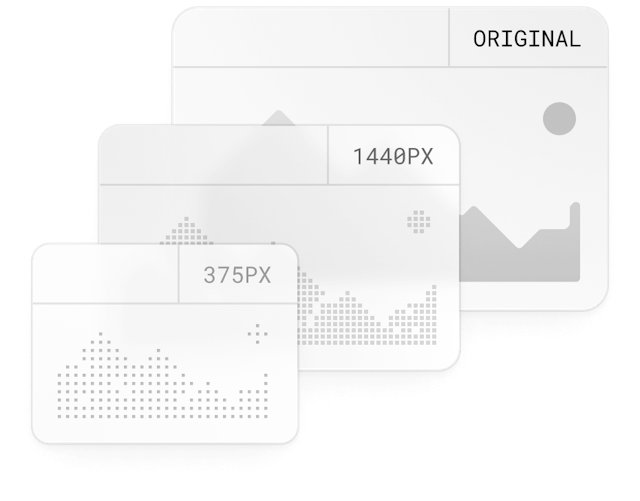

Build Optimizations
According to Web Almanac, images account for a huge portion of the typical website’s page weight and can have a sizable impact on your website's LCP performance. The Next.js Image component extends the HTML image element with features for automatic image optimization.
Size Optimization
Automatically serve correctly sized images for each device, using modern image formats like WebP and AVIF.
Visual Stability
Prevent layout shift automatically when images are loading.
Faster Page Loading
Images are only loaded when they enter the viewport using native browser lazy loading, with optional blur-up
placeholders.Asset Flexibility
On-demand image resizing, even for images stored on remote servers.
Server Components
Rendering converts the code you write into user interfaces. React and Next.js allow you to create hybrid web applications where parts of your code can be rendered on the server or the client. This section will help you understand the differences between these rendering environments, strategies, and runtimes.